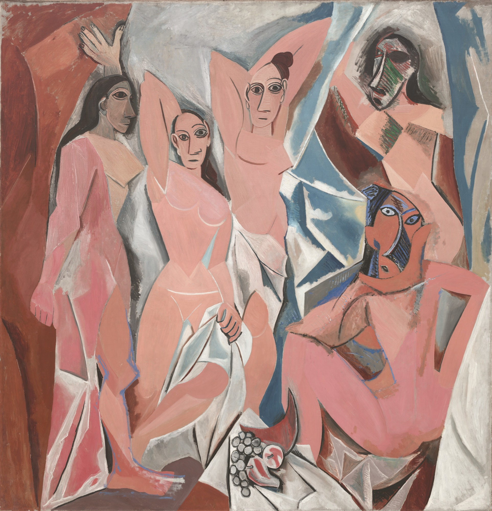
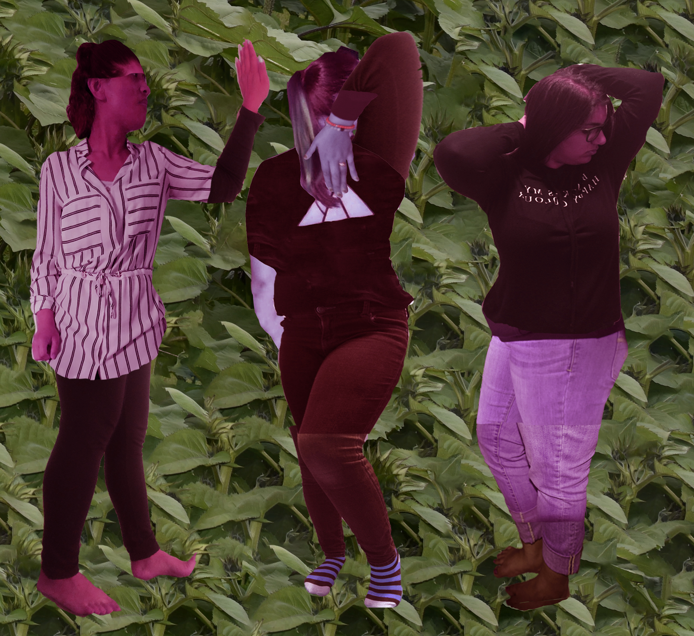
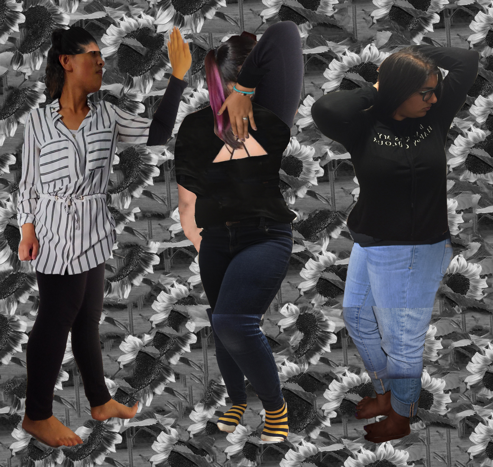

The goal of this assignment was to take multiple images of either yourself, or friends, & duplicate a minimum of three figures from the Picasso painting Les Demoiselles d'Avignon , which is shown below.

The first of these images was to be coloured in any way we chose, but must have had a green background.

The second, again, was to be coloured in any way we chose, but must have had a grayscale background.

Working through this assignment allowed me to become more familiar with various tools on photoshop such as: hues and saturation (among other filters), layering, fill, and lasso, to name the most used ones.